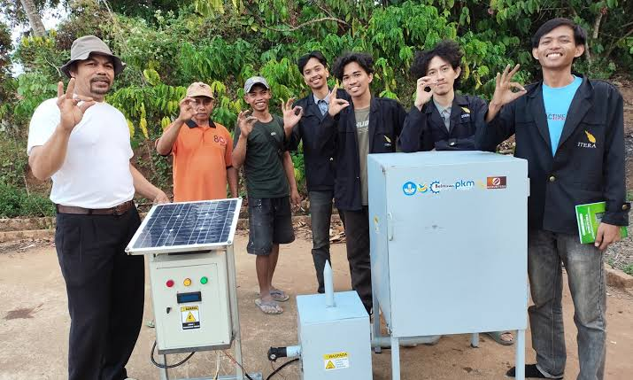

Mahasiswa ITERA Kembangkan Pengering Kopi Hibrida Berbasis Biomassa dan Energi Surya
Penulis: Andre Ramadhani | Editor: Rudiyansyah | Tanggal: 10 September 2026

Inovasi Alat Pengering "Robustera"
Tim mahasiswa Institut Teknologi Sumatera (ITERA) berhasil mengembangkan Robustera, yaitu inovasi alat pengering kopi hibrida yang memadukan energi biomassa dari limbah kopi dengan energi surya. Alat ini dirancang untuk memangkas waktu pengeringan kopi dari 7–14 hari menjadi hanya sekitar dua jam.
Teknologi Hibrida dan Pengolahan Limbah
Robustera memanfaatkan sekam, kulit cangkang, dan kulit ari kopi yang diolah menjadi briket biomassa. Energi surya digunakan untuk memasok daya ke blower, sistem pemantauan, dan heater.
Sistem ini juga dilengkapi pengontrol suhu otomatis. Ketika temperatur melebihi 50°C, kecepatan blower akan diturunkan secara otomatis agar panas tetap stabil dan tidak merusak kualitas biji kopi.
Penerapan pada Mitra dan Potensi Komoditas Lain
Inovasi ini telah diterapkan bersama Kelompok Tani Sinarbanten di Desa Gunung Sadar, Kabupaten Lampung Utara. Selain untuk kopi, sistem pengering ini juga berpotensi diterapkan pada komoditas pertanian lain seperti pinang, kakao, dan padi.